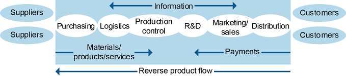
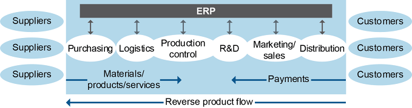
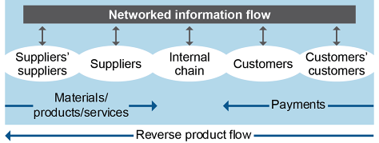
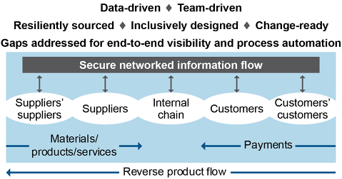
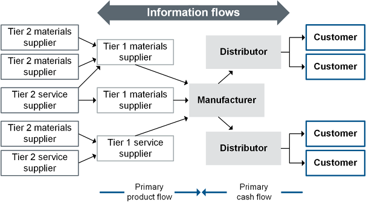
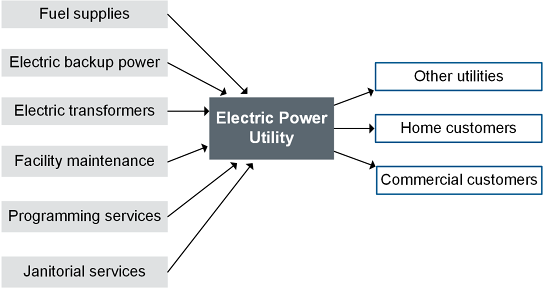
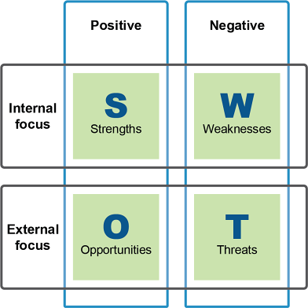

Supply chain maturity refers to the level of integration and coordination with supply partners relative to those of competing supply chains. Organizations that want to create value from their supply chains need to determine their current state of supply chain maturity, their desired state, and how to close the gaps between the two. Understanding the possible levels of supply chain maturity will help with this analysis. After presenting these discussions, some examples of supply chain complexity are addressed, starting from very simple supply chains and adding layers of complexity.
The advances made over the past few decades in supply chain management are generally reflected in each supply chain's development. Experts in the field agree that there are typically between four and five stages in this development. The various stages can go by many names. We'll use a five-stage model of supply chain management evolution:
Many organizations made these leaps over time as computers and cultures progressed. However, an organization in a particular industry may have been sheltered from some of these changes and may be less advanced than another. Also, some small and midsize organizations may be at a lower level than their larger peers due to a lack of resources for improvements. Finally, an organization might believe it is in the highest stage but could actually have slipped down a notch through complacency. Therefore, these stages can also be seen as being relative to the capabilities of competing chains. Some enterprises are likely to exhibit behaviors from two or more phases of maturity, as this is an evolution, not a specific end state.
Early in the evolution of the supply chain, many organizations operate in a stable chain with predictable supply and demand. In a stable supply chain, costs are low due to predictable demand and minimal need for changes. Production runs can be long, and few line changes will be needed. This is the model that used to hold true for many industries, especially those that were regional and had only regional competitors, but as globalization and technology have connected the world, fewer and fewer industries have this level of stability. Since most industries are no longer predictable, most immature supply chains begin in Stage 1, as described below.
Whether the supply chain ownership strategy rests on vertical integration, lateral integration, or a hybrid, the relative sophistication with which the chain is managed develops along a continuum that we have divided into these stages.
It's possible for the nucleus company in a lateral supply chain to lack any disciplined management for both its internal and external chains; it may lack clear internal definitions and goals and have no external links other than transactional ones. Exhibit 1-4 illustrates the lack of coordinated flows of information or solid relationships among potential partners.

This is a reactive supply chain:
Purchasing is ad hoc and transactional. There may not be preferred suppliers or they may not be consistently used. Purchasing may not consult with logistics at all.
Exhibit 1-5 provides an illustration of the semifunctional enterprise. Information flow has been improved and functional areas have been defined—but they tend to perform their functions one after the other without collaborating on the most effective ways of creating value. At this stage, there are no partnerships with customers and suppliers.

This is a reactive efficient supply chain:
While some or all functions engage in initiatives designed to increase efficiency within their departmental walls, there is little or no overlap in decision making from one department to another. When the nucleus company concentrates only on improvements within its separate departments, it may find its efforts wasted through lack of communication. For example, market researchers and well-trained sales representatives may uncover market opportunities among current and potential customers without being provided an opportunity to share this information in a structured collaboration with product designers. And this lack of collaboration may play out repeatedly among the departments. In this stage some functions may be automated—MRP software, for instance, may include bills of material as part of online workflow. But new software in one department may be incompatible with software in other areas. Mergers and acquisitions can also result in incompatible systems.
In the third stage of supply chain evolution, the individual company begins to focus on companywide business processes rather than individual compartmentalized functions. Historically, this shift in supply chain strategy is associated with the late 1980s and early 1990s—when computers were becoming powerful and affordable.
Milestones of this phase include introduction of manufacturing and enterprisewide software, increased cross-functional communication and training, centrally located and easily accessible databases and files, and periodic sales and operations planning meetings attended by representatives for all departments involved.
This is a proactive efficient supply chain:
Exhibit 1-6 provides a visual representation of a linked internal supply chain with collaboration between functions and sharing of information through companywide enterprise resources planning software (ERP).

This stage is markedly different from the previous one because of the following:
Product design in some companies is now a team effort in which production engineers and other stakeholders, such as marketing and purchasing, collaborate with design engineers to "design for manufacturability," "design for logistics," or "design for the environment." This approach results in products that are on target for customer desires and are ready to be manufactured without making costly modifications in processes, equipment, or staffing.
There are improvements in customer service due to astute segmentation of markets and more efficient replenishment policies suited to each segment.
Inventory is treated more strategically as Just-in-Time procedures, more accurate demand planning, and improved logistics work together to make fulfillment more efficient and reliable.
Warehousing and transportation decisions are carried out in tandem to achieve the optimal balance of cost-effectiveness and customer service.
Warehouse management benefits from more advanced equipment and automation.
At this point, the nucleus company may begin to take a step toward integration with the external members of the supply chain by contracting with a logistics supplier, such as United Parcel Service (UPS), to "insource" by using its expertise to help optimize logistics decisions.
The hallmark of this stage is the decision to extend at least one business process beyond the boundary of the individual corporation. When the nucleus company decides to collaborate on planning, design, replenishment, logistics, or another business process with one of its suppliers or customers, the barrier to developing the extended enterprise from end to end of the supply chain has been overcome. The company integrates its internal network with the internal networks of selected supply chain partners to improve efficiency, product/service quality, or both. The starting point is generally one inside/outside partnership that points the way toward the completely networked enterprise.
Exhibit 1-7 shows how the supply chain has changed.

This is a strategic driver supply chain:
There is an initial exploratory collaboration between a channel master and one or several partners in the supply chain—often a manufacturer and one component supplier or a retailer and one supplier of finished goods. It may involve only one component or product; the famous collaboration between Procter & Gamble and Walmart began with diapers. If this first collaboration succeeds, it can lead to a more fully networked relationship between the first two partners—more products might be involved, there might be more complete sharing of information across integrated electronic networks and more formal team building and planning across corporate boundaries, and so on. And that relationship can become the model for other partnerships and, eventually, for multicompany collaborations that stretch from retailer through manufacturer into one or more tiers of suppliers.
Technology enables the extended enterprise to reach farther, to add new partners, to move faster in response to market changes, and to operate with broader scope than in Stage 3. Enterprise resource planning (ERP) software with closed-loop planning is able to link the entire internal supply chain together on one platform.
The networked enterprise is built on a variety of networking platforms. Partners begin to synchronize their ERP systems across corporate boundaries so they can share data as necessary for their efficient collaboration. A retailer may send information from the point of sale to suppliers each time a customer purchases an item to trigger production of a replacement. For example, Dell Computer is able to fill internet orders without keeping its own inventory because customers' specifications are sent immediately through to component suppliers so the computer can be assembled to order.
Cross-organizational approaches are implemented with certain processes, such as CPFR (collaborative planning, forecasting, and replenishment).
In Stage 4, there are advances in e-commerce such as interactive sites where customers can order products and services, track their shipment, and communicate with customer service immediately upon their arrival. Behind the scenes of such business-to-consumer e-commerce, there is also increasing business-to-business e-commerce taking place on wired and wireless networks. In the global arena, competition no longer takes place only among individual companies; whole supply chains are now battling one another for customers, for workers, and for capital in multiple countries across the globe. Cooperation among companies is integral to competition among supply chains.
The orchestrated supply chain level of supply chain maturity is often expressed as the supply chain digital transformation; in Europe it is sometimes called Industrie 4.0. This stage is all about realizing the benefits of all of the individual improvements in the different parts of the supply chain. More so than any of the prior stages, this stage is relative to the capabilities of competing supply chains. A supply chain is truly in this stage only when it realizes an actual competitive advantage from becoming better orchestrated than its competitors. Orchestration requires more than just seamless technology; it requires skilled leaders and teams who can leverage these technologies and adapt quickly to change. Therefore, supply chain digital transformation requires maturity in a number of areas for all significant parties in the supply chain.
Exhibit 1-8 shows how the core model of the supply chain is mostly the same as the prior level but with more emphasis on security, resilience (i.e., building in risk management), value realization, and orchestrating people and processes.

This is a consistent and systematic supply chain:
It is essential that the teams who will be closing technology or social gaps be cross-functional among key supply chain partners and have multiple layers of expertise. Strong leadership and the right contributors drive the needed changes. A common area for needed relationship improvement is with IT professionals. These relationships sometimes have suffered because prior initiatives have failed to realize the envisioned benefits. Also, IT professionals may have become too reactive (i.e., putting out fires) and need to be given the resources to be more strategic. However, IT relationship building is especially needed because the advances in connectivity with partners creates more avenues for cyber attacks that IT will need to address comprehensively. Also both technical depth and breadth are needed to determine technology gaps or how to make use of the latest technologies such as blockchain.
This people- and process-based transformation requires organizations and their partners to embrace change management. Change management is built into the organization's culture and perhaps its organizational structures. People embrace change because they have become accustomed to it and because they receive the support they need. Organizations embrace change because they will share in the benefits of the change.
The digital transformation goes way beyond simple digitization of trade documents or even digitalization of control systems such as remote sensors triggering an automated response. The digital transformation takes these advances a step further, such as by ensuring that electronic documentation travels seamlessly among supply partners, trade intermediaries, and customs authorities. Demand data from customers may feed directly into not only finished goods planning but also raw materials and suppliers' planning systems. Digitalized control systems are moved from being locally controlled to being controlled remotely and centralized such as by using a control tower.
Data on supply chain inventory and assets is truly real-time, and it feeds directly into decision-making tools and predictive analytics (e.g., predictive maintenance scheduling). Things that require little or no human intervention are fully automated. However, before they are automated, the process itself is reviewed to ensure that it is efficient and is intuitive for end users.
Product development is a key beneficiary of data-driven decisions, resulting in products that reflect actual customer requirements while also being designed for the supply chain, for sustainability, and so on.
Supply Chain Maturity as an Input to Strategy
Evolved and sophisticated supply chains in the higher stages have network partners with highly integrated and synchronized connectivity that focus more on creating net value than on pure cost minimization.
The goal for a supply chain strategy is to assess if there are gaps that are keeping the supply chain from fully realizing connectivity and visibility goals. After such gaps or misalignments have been resolved, it is important to continually monitor supply chain maturity, since there is no end to this process. Reassessments may be needed after major reorganizations, mergers and acquisitions, or changes in the external environment.
Supply Chain Examples
Consider, as a stripped-down supply chain model, a street vendor who sells snacks. This could be fresh crepes in Paris, hot dogs in Washington, D.C., or small tapas plates in South America. These may be small family businesses.
The supplier is probably a small wholesale food distributor that sells basic ingredients to many food kiosks. The worker is the "producer" who turns the raw ingredients into menu items. The stand, operated by one or two owners, is the retailer.
Notice that even in this simplest of supply chains, the actual situation is more complex. For instance, there are more suppliers. Tap water to warm the stainless steel food containers comes from a government entity. Nearby is a food preparation area with refrigeration; electricity is provided by another supplier. There is also the supplier of the cart or food truck itself. Somewhere in the supply chain, though they remain invisible in our model, are the suppliers' suppliers, who bring materials, components, or services to the food wholesaler and the utility companies.
Even the flows in a street vendor example aren't simple. The product flows include ingredients, paper and plastic products, and products used in the manufacturing process such as fuel. Information flows include orders submitted by end users (consumers) of the product, by the distributor (the person on the street with the cart) to the manufacturer (the cook), and by the manufacturer to the suppliers. Planning will include recipes and shopping lists, discussions of potential demand, and reviews of last year's results. The flows of cash may be based on cash register and credit card receipts.
Cash travels in several separate flows from the manufacturer to suppliers of products and services and, of course, to any lenders or investors for debt or dividend payments. There are also logistics concerns: transportation from one entity to the other—perhaps drawing upon the private fleet of a car or two—as well as warehousing decisions. And, finally, reverse flows are used to return any unacceptable menu items, to compost the food waste, and to recycle.
Many global businesses had very humble beginnings. Perhaps the food vendor comes up with a new recipe for crepes; a customer is impressed and asks if the vendor can make 50 crepes for a lunch; someone at the lunch owns a neighborhood restaurant… and before long the vendor has space in a small commercial kitchen facility and a catering business. It's surprising how many challenges and opportunities can be anticipated in a very simple model.
Now let's get a little more complex. Illustrations of manufacturing versus service supply chain models follow. After that there is a discussion of specialized supply chains.
In Exhibit 1-9, two tiers of suppliers and distribution centers and customers are shown.

Discussions of supply chains typically put manufacturing at the center and suppliers of components to the immediate left. These days, the nucleus firm may actually be a designer of products and a decision maker who outsources all manufacturing. Alternately, it may be that component suppliers are the most crucial consideration when designing and managing a supply chain for manufactured products, but utilities and other services are important contributors to the cost of operations.
The exhibit shows that Tier 1 suppliers have their own suppliers in Tier 2. The wholesale food distributor that supplies the daily ingredients and raw materials for the menu items has its material and service suppliers—and they have their suppliers, and so forth. The flour for the crepes, for instance, is not a raw material but a product with its own supply chain that begins in a farmer's wheat field and is processed in a plant, shipped to a wholesaler, and distributed. No matter how far you travel toward the left, you will never run out of new tiers of suppliers.
Even a raw material extractor, such as a coal mine, has its own suppliers of extraction machinery and services. In fact, the coal mine may ship coal to a generating plant that supplies power to the manufacturer that produces a machine that is shipped to a distributor that sells mining equipment to the same mine that began the process; supply chains can double back on themselves. (A distributor is a business that does not manufacture its own products but purchases and resells these products.)
📖 ASCM Definition — company in the service industry:
In the case of our food vendor, services most obviously include utilities, transportation, warehousing, carpentry, and cleanup, among others. Utilities, which are suppliers to all manufacturers, are crucial considerations when locating plants and warehouses. If water and electricity (or natural gas, or both) are not available at a proposed site, they cannot be readily made available.
Service-oriented supply chains also require sophisticated management. Exhibit 1-10 illustrates, in simple form, the supply chain of an electric utility. It receives products, services, and supplies of its own and dispenses its services into three distribution channels: home customers, commercial customers, and other utilities.

Service industries are included in the category of specialized supply chains, as are humanitarian and disaster relief, nonprofits, and retailers. Other supply chains that might be considered specialized are industry-specific, virtual or e-business, or small- or medium-size companies' chains. Maintenance, repair, and operating supplies (MRO) might also be considered an example of a specialized supply chain.
If your organization is running one of these types of supply chains, learning how it differs from the large design- and manufacturing-oriented supply chains described elsewhere in these materials is critical. However, even if a supply chain manager doesn't operate a specialized chain, studying these supply chains can help him or her learn from the experiences of the chains. Here are some examples:
A humanitarian and disaster relief supply chain has to be developed quickly yet be resilient against theft, misappropriation, and transportation mode disruptions. Since organizations that provide humanitarian aid and disaster relief are continually operating in an environment filled with uncertainty, they learn to maximize responsiveness. They become agile in operating a supply chain where supply and demand are routinely unbalanced, where demand can spike quickly, and where roads, electricity, or the full rule of law may be compromised. One way they stay agile is by developing ongoing relationships with persons in the community that they can trust. For example, the charity Feed My Starving Children distributes food to children in poor regions as well as to regions recovering from natural disasters. It develops personal relationships with local charities that handle the final distribution of food to those people who need it most.
For hospitals (considered a service industry), cost cutting is vital, but the primary goal must always be safe and effective provision of patient care. To this end, visibility and quality are strongly emphasized. Supply chain costs are a significant expense for hospitals. To manage these costs, hospitals are working to ensure that the right level of inventory is kept on hand to avoid shortages while also avoiding carrying too much perishable inventory (e.g., past its expiration date). Automating ordering and validating that actual prices match contract prices also help control costs. Hospitals are investing in keeping databases clean and up to date. They use unique device identifiers (UDIs), required in the U.S. since 2014, to improve tracking and billing accuracy. From a quality perspective, administrators are looking at best outcomes over lowest cost for devices, which often shortens hospital stays and thus reduces total costs.
Shortages caused by the COVID-19 pandemic have been addressed in a number of ways, including by centralizing supplies of critical resources to provide risk pooling and centrally coordinating information on available beds, respirators, and even trained staff resources. This information sharing occurs in some cases not only with government services but also with competitors. Hospitals can work not only to alleviate current bottlenecks but to also forecast potential new bottlenecks in the weeks ahead so they can plan rather than just react. They are also being proactive in carefully scheduling patient services that have room for delays in order to reduce the volatility of demand on the system.
Today's retailers are under tremendous pressure to redesign their supply chains to compete against online retailers like Amazon, who is putting huge cost pressures on retailers with its world-class supply chain. For example, Amazon has so many distribution centers that most orders are shipped within just one shipping zone, while most multichannel retailers have to ship through more zones at a higher cost. From an inbound freight perspective, Amazon picks up most supplier items itself using its own transportation network, while most multichannel retailers pick up less than half of items themselves. From an inventory perspective, Amazon's distribution centers (DCs) keep the top-selling items in every DC and unevenly distribute the rest to reduce inventory holding periods; this, plus integrated track and trace, significantly reduces inventory holding costs. Most multichannel retailers have DCs designed for cross-docking. This works well for retail efficiency but not for online order fulfillment, because a key purpose of cross-docking is to create full-truckload assortments for retailers while online orders consist of multiple individual parcels.
When redesigning their organization's supply chain strategy, retailers need to think big and not only close the gaps that keep their supply chains from being less efficient than those of online-only retailers but also become an effective multichannel option that is quickly responsive to the changing marketplace. For example, a retailer can use online sales to test new products and move only top sellers to retail spaces. In another example, some retailers are using their stores as distribution centers and are using store inventory to fulfill online orders.